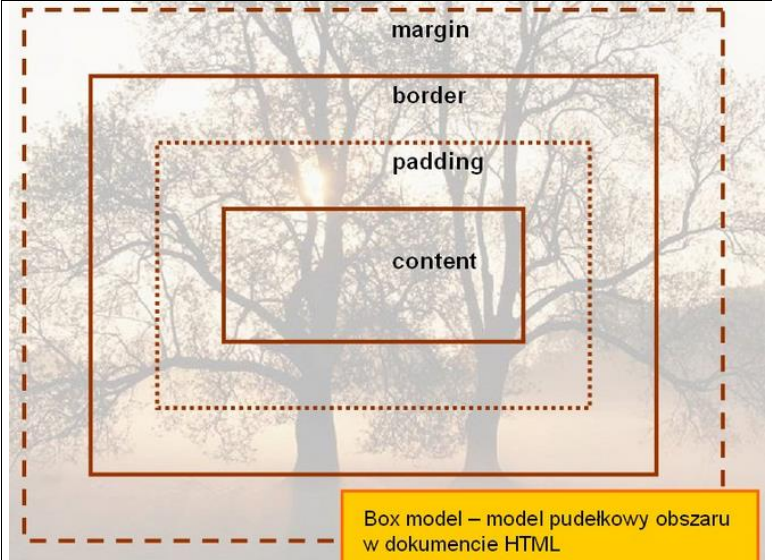
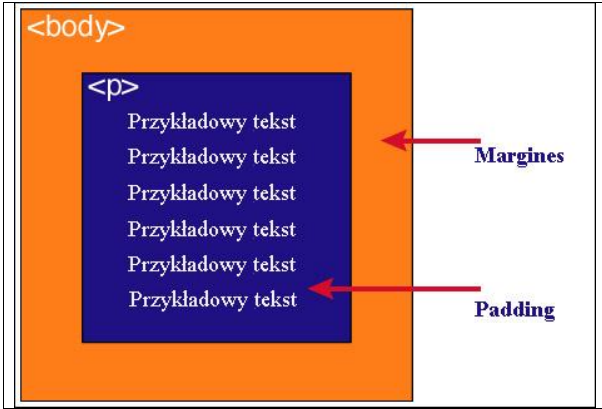

| Zawartość | Opis |
|---|---|
| content | Zawartość elementu (np.: tekst, obrazek). |
| padding | Otaczające marginesy wewnętrzne, odstęp między obramowaniem i zawartością elementu. |
| border | Obramowania wokół zawartości elementu, ma styl i kolor. |
| margin | Marginesy wokół ramki (margines zewnętrzny). Jest to pusty obszar wokół ramki, który nie ma koloru tła i jest przeźroczysty. |
Padding, border i margin mogą mieć zerową wartość.
Tło elementu jest określone dla wszystkich z podanych powyżej obszarów z wyjątkiem marginesów zewnętrznych, które zawsze są przezroczyste (transparent).

Padding określa przestrzeń wokół danego elementu, np:
lub >div>, natomiast margines przestrzeń pomiędzy elementami.

Jak widać na rysunku, padding oznaczony jest kolorem niebieskim. Określa on wielkość przestrzeni wokół elementu
. Element ten posiada również margines zaznaczony kolorem pomarańczowym. Jest to odległość od brzegu elementu
.